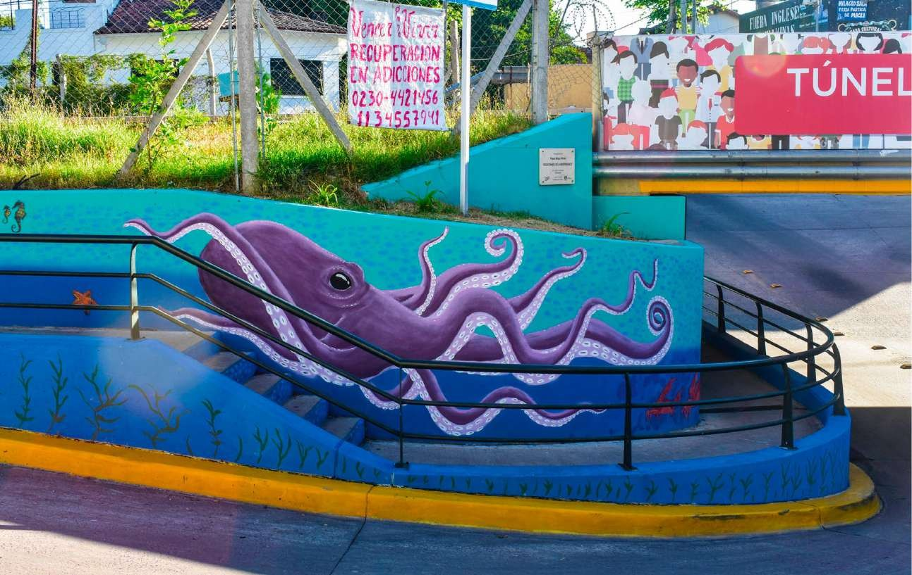
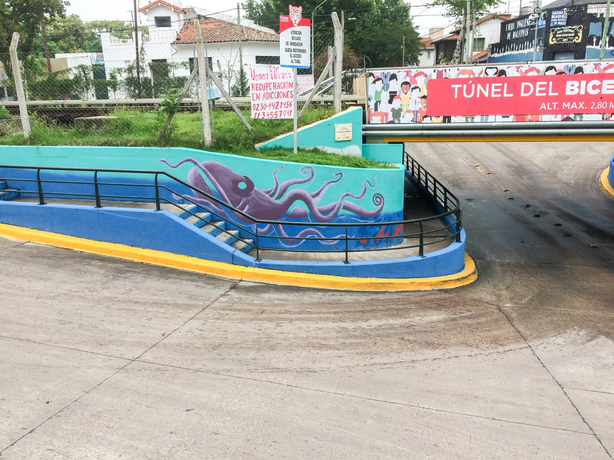

Down the Ocean
Commission WorkMix Media

A full underwater world covering roughly 150 square metres along the Bicentennial Tunnel in Tigre, Buenos Aires Province, Argentina. An octopus stretches across the entrance and a sea turtle drifts past jellyfish further inside, so the scene unfolds as you walk through rather than being read from a single point. It was a commissioned public work, painted in mixed media on the tunnel walls.

